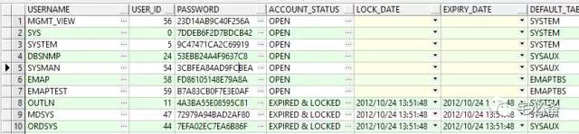
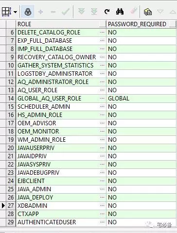
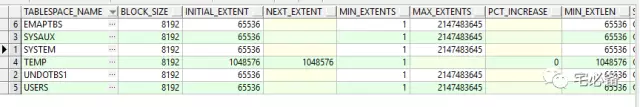
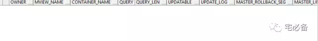
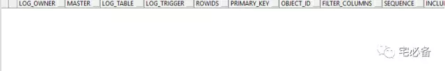
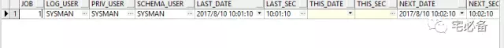
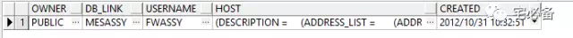

使用expdp/impdp进行迁移
这期内容为使用expdp/impdp进行迁移的一般步骤
分为如下五个部分:
- 源库环境确认
- 目标端操作
- 源库端导出数据
- 目标端导入数据
- 事后检查
1.源库环境确认
1.1 查看数据库用户
SQL>select * from dba_users;

1.2 查看数据库角色
SQL>select * from dba_roles;

1.3 查看数据库表空间
SQL>select * from dba_tablespaces;

1.4 查看物化视图
SQL>select * from dba_mviews;

1.5 查看物化视图日志
SQL>select * from dba_mview_logs;

1.6 查看job及scheduler
SQL>select * from dba_jobs;
SQL>select * from dba_scheduler_jobs;

1.7 查看dblink
SQL>select * from dba_db_links;

1.8 查看其他数据库有无关联
这里查看环境中其他数据库的dblink是否和该数据库有关联
2. 目标端操作
2.1 建立表空间
SQL>CREATE SMALLFILE TABLESPACE "EMAPTBS" DATAFILE SIZE 25G LOGGING EXTENT MANAGEMENT LOCAL SEGMENT SPACE MANAGEMENT AUTO;
SQL>ALTER TABLESPACE "EMAPTBS" ADD DATAFILE SIZE 25G;
具体查看: 表空间的日常运维命令
2.2 建立角色
没有需要建立的角色
2.3 建立用户和权限
SQL>create user emap identified by emap default tablespace emaptbs ;
SQL>create user emaptest identified by emaptest default tablespace emaptbs;
SQL>grant connect,resource to emap;
SQL>grant connect,resource to emaptest;
SQL>grant select on v_$session to emap;
SQL>grant select on v_$session to emaptest;
SQL>grant unlimited tablespace to emap;
SQL>grant unlimited tablespace to emaptest;
2.4 建立dblink(只需建立public用户的)
create public database link MESASSY
connect to username IDENTIFIED BY password
using '(description=(address=(protocol=TCP)
(host=10.65.1.113)(port=1521))(connect_data=(SERVICE_NAME = MESASSY)))';
3. 源库端导出数据
这里使用sys账号进行
3.1 查看数据库目录信息
SQL>select * from dba_directories;
3.2 建立新的目录用于存放导出文件
SQL>CREATE OR REPLACE DIRECTORY dump_dir AS '/oradata/dump';
3.3 导出emap/emaptest用户数据
导出前锁定emap/emaptest账号
SQL>alter user emap acccount lock;
SQL>alter user emaptest account lock;
注意oracle 11.2.0.1 之后空表如没有数据则会不导出
请事先找出这些表
新建parfile:expdp_emap.txt
userid='sys/ase_sys_1 as sysdba'
job_name=job_emp_emptest_exp
directory=dump_dir
filesize=15G
dumpfile=expdp_emap_%U.dmp
logfile=emp_emptest_expdp.log
schemas=emap,emaptest
parallel=4
content=all
3.4 导出数据
expdp parfile=expdp_emap.txt
4. 目标端导入数据
4.1 查看数据库目录信息
SQL>select * from dba_directories
4.2 建立新的目录用于存放导出文件
SQL>CREATE OR REPLACE DIRECTORY dump_dir AS '/oradata/dump/';
4.3 拷贝expdp文件至该目录
scp expdp_emp_0* oracle@10.65.202.201:/oradata/dump/
4.4 导入emap/emaptest用户数据
新建parfile:impdp_emap.txt
userid='sys/ase_password as sysdba'
job_name=job_emp_emptest_imp
directory=dump_dir
dumpfile=expdp_emap_%U.dmp
logfile=emp_emptest_impdp.log
schemas=emap,emaptest
parallel=4
content=all
导入数据
impdp parfile=exp_emap.txt
5. 事后检查
5.1 检查对象是否迁移完成
参见Python脚本
5.2 检查对象是否失效
-
检查如下对象是否失效
-
物化视图
-
Job及scheduler
-
Procedure
-
Package等等
5.2 新环境参数检查
检查如下参数是否和源库一致或设置合理(不保证全面)
-
sga
-
pga
-
PROCESSES
-
SESSIONS
-
case_sensitive
-
deffer_creation_segement
-
open_cursor
-
job_queue_processes